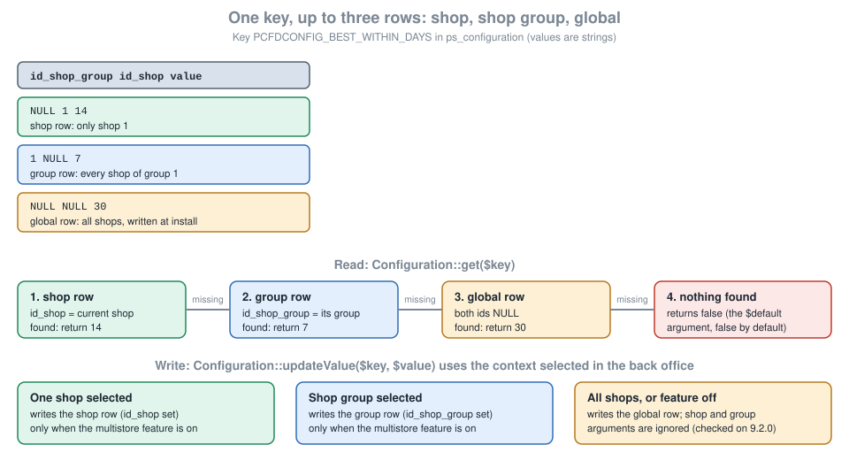

Module Configuration
|
This content was generated with the assistance of AI and should be verified against the official documentation before being relied on in production. |
This page was written against PrestaShop 9.2.0 (released on 2026-09-30) and checked on 2026-10-27. Every command and every listing on it ran on the official Docker image prestashop/prestashop:9.2.0 (PHP 8.5.12, MySQL 8.4, Symfony 6.4.46, Smarty 4.5.7, Twig 3.27.1, Hummingbird 2.1.2 as the active theme) in developer mode. The Configure button, the Configuration store and the two kinds of configuration page work the same way in every PrestaShop 9 release and in the supported 8.x branch; the places where 8.x differs are collected in Version notes. PrestaShop is open source software, so nothing here depends on a plan or an edition.
A module nearly always needs a few settings that the merchant can change without touching code: whether a feature is on, a label, a threshold, a weekday. PrestaShop gives a module three building blocks for that and this page covers all of them: a key and value store (the Configuration class and the table behind it), a place in the back office where the merchant edits the values (the page behind the Configure button), and the rules that decide which shop of a multistore installation a value belongs to. It follows the pages on the module skeleton and on hooks, and it comes before the page on services and admin controllers, whose controller pattern the modern configuration page already uses.
The running example is the Pocket Coffee roast date badge: a small block on the product page that says when the beans in the bag were roasted ("Roasted on 2026-10-26, best within 30 days"). Its settings are whether the badge is shown, its label in Spanish and in English, the weekday on which the shop roasts, the number of days the beans are at their best and, to show a decimal value, the free shipping threshold of 40.00 EUR. Two modules were built and installed: pcfdconfig keeps the settings on a HelperForm page and shows the badge, and pcfdsettings keeps similar settings on a Symfony form page.
What was run and what was not
The two modules were installed with bin/console prestashop:module install, their configuration pages were opened and posted with an authenticated HTTP session against the back office (valid and invalid values, English and Spanish labels), the stored rows were read back from the database, and the badge was requested on the product page in both languages. The Configuration experiments of the multistore section ran through a PHP script that loads config/config.inc.php. bin/console lint:twig, lint:yaml and php -l passed, and PHP CS Fixer 3.95 with the PrestaShop coding standard reports nothing to fix in either module.
The multistore feature of the test shop was never switched on and no second shop was created, so the multistore checkboxes of a Symfony settings form and the shop selector behaviour of a HelperForm page are described from the source code and the documentation and were not exercised. Pages were not looked at in a graphical browser; the markup excerpts below come from the HTML returned by the server. PHPStan could not be run because the configuration generated by the PrestaShop development tools targets an older PHPStan than the one Composer installs.
How the Configure button works
In the Modules > Module Manager page a module gets a Configure button only if its main class defines a public getContent() method. The button leads to the route admin_module_configure_action, which accepts GET and POST on /improve/modules/manage/action/configure/{module_name}. The core controller, ModuleController::configureModuleAction, requires one of the four permissions (read, create, update or delete) on the Module Manager page, calls the module’s getContent() (it flashes an error when the method is missing) and renders the returned string inside the legacy back-office layout. What getContent() returns is therefore the page. A module has two ways to fill it, and the module manager does not care which one it is.
HelperForm in getContent() |
Symfony settings form | |
|---|---|---|
Where the code lives |
In the main module class (or a class it calls). The same method shows the form and processes the post. |
In |
Rendering |
|
Symfony form types and the back-office UI kit (Bootstrap 4); the field list is code. |
Validation |
Written by hand ( |
Symfony constraints on the form fields. |
CSRF protection |
The token of the Modules controller, put in the form action by |
The Symfony form token ( |
Permissions |
Those of the Module Manager page: any of read, create, update or delete on it opens the page, whatever the module. |
The roles of the tab behind the route, checked with |
Multistore |
Manual: the module writes values for the selected context and has no per-field "override for this shop" checkbox. |
Built in: the form type extends |
Works in 8.x |
Yes, unchanged. |
Yes, with the 8.x controller base class ( |
Typical use |
One to ten simple fields, older modules, code that must also run on 1.7 and 8. |
New modules that already have Symfony controllers, richer widgets, multistore settings. |
The Configuration store
The two tables
Everything that is saved with the Configuration class lands in two tables of the shop database. ps_configuration holds one row per key and scope and ps_configuration_lang holds the translated values of the keys that are multilingual.
| Column | Type | Meaning |
|---|---|---|
|
unsigned int, primary key |
Row id; the language table points to it. |
|
unsigned int, nullable |
Shop group the row applies to. |
|
unsigned int, nullable |
Shop the row applies to. |
|
varchar(254) |
The key. Letters, digits, underscore and hyphen only ( |
|
mediumtext, nullable |
The value, always stored as a string. |
|
datetime |
Timestamps maintained by the class. |
A row with both id_shop_group and id_shop set to NULL is the global row, the one every shop uses unless a more specific row exists. After Pocket Coffee’s badge settings are saved on the HelperForm page, the table contains this (read back with a query):
PCFDCONFIG_BADGE_ENABLED 1 NULL NULL
PCFDCONFIG_BADGE_LABEL NULL NULL NULL (values in ps_configuration_lang: id_lang 1 "Roasted on", id_lang 2 "Tostado el")
PCFDCONFIG_BEST_WITHIN_DAYS 30 NULL NULL
PCFDCONFIG_FREE_SHIPPING_FROM 40.00 NULL NULL
PCFDCONFIG_ROAST_WEEKDAY 1 NULL NULLThe first time any code calls Configuration::get() in a request, the class loads the whole of both tables into memory with a single query. Two consequences follow. Reading a key is free after that, and writing a very large value (an image encoded as base64, a long JSON document) makes every request on the shop slower, because it is read on every request whether or not the module needs it. Large data belongs in a file under var/modules/<name>/ or in a table of the module’s own, which the page on database and entities describes.
The static API
The static methods of the Configuration class are the API that works in every PrestaShop version and in every context, including front hooks, legacy controllers and install scripts. The methods a module uses are these.
| Call | Behaviour |
|---|---|
|
Returns the value for the current shop context, looking at the shop row, then the group row, then the global row. Returns the |
|
Returns an associative array of several keys at once. |
|
Returns the array of values of a multilingual key indexed by language id. |
|
Reads the global row only, ignoring the current shop and group. |
|
Tells whether a row exists in exactly that scope. |
|
Creates or updates the row of the selected scope and returns a boolean. |
|
Writes the global row, whatever the selected context. Use it in |
|
Deletes the key in every scope. Use it in |
|
Deletes the row of the selected shop or group only, so that the shop falls back to the inherited value. Does nothing in the all-shops context. |
|
True when the selected shop or group has its own row for the key (and the multistore feature is active). |
Four rules keep a module out of trouble.
-
Prefix the key with the module’s name in capitals (
PCFDCONFIG_). Keys share one namespace with the core (PS_*) and with every other module, and the module’s own good practices page asks for prefixes. -
Treat the value as a string. A saved
truecomes back as"1"and a savedfalseas"", soConfiguration::get('X') === trueis never true. Cast when reading. -
Remember that a missing key returns
false, notnull. Install default values ininstall()so that an absent key means "the module is broken", not "the default". -
Delete every key in
uninstall(). A module that leaves rows behind pollutes the table for good.
Since 9.1 every call of updateValue() first executes the hook actionConfigurationUpdateValueBefore with the key, the values, the HTML flag and the shop group and shop ids. A module can use it to audit changes or to veto a value, which the hooks page explains in general.
The Configuration service
Code that runs inside a Symfony controller, a CQRS handler or any other service should not call the static class. The same store is available as the service prestashop.adapter.legacy.configuration, which implements PrestaShop\PrestaShop\Core\ConfigurationInterface. Its methods are get($key, $default = null, ?ShopConstraint $shopConstraint = null), set($key, $value, ?ShopConstraint $shopConstraint = null, array $options = []), has($key, ?ShopConstraint $shopConstraint = null), remove($key) and deleteFromContext($key, ShopConstraint $shopConstraint). Three differences from the static class matter: a missing key returns null (not false), the target scope is a ShopConstraint value object instead of loose ids, and a multilingual value comes back as an array indexed by language id.
ShopConstraint has three named constructors: ShopConstraint::shopId($shopId) for one shop, ShopConstraint::shopGroup($shopGroupId) for every shop of a group and ShopConstraint::allShops() for the global row. The documentation recommends always passing one, because without it the result depends on the shop context of the request, which is unpredictable in a multistore installation. A controller gets the service by type hint (ConfigurationInterface is among the services PrestaShopAdminController subscribes to, so $this->getConfiguration() works) and a plain service declares @prestashop.adapter.legacy.configuration as an argument.
Changing values from the command line
Two console commands change configuration without the back office, which is how a deployment script or a CI job sets the values of a module.
prestashop:config reads, writes and removes one key. It takes the action (get, set or remove) and the key, the value in --value, the language in --lang (an id or an ISO code) and the target with --shopId or --shopGroupId; with neither, the command works on all shops. A plain key and a multilingual key were changed like this:
php bin/console prestashop:config get PCFDCONFIG_BEST_WITHIN_DAYS
php bin/console prestashop:config set PCFDCONFIG_BEST_WITHIN_DAYS --value=25
php bin/console prestashop:config get PCFDCONFIG_BADGE_LABEL --lang=es
php bin/console prestashop:config set PCFDCONFIG_BADGE_LABEL --lang=es --value="Tostado el"The output of the four commands was PCFDCONFIG_BEST_WITHIN_DAYS=21, PCFDCONFIG_BEST_WITHIN_DAYS=25 and, for the label, PCFDCONFIG_BADGE_LABEL=Tostado el before and after the change.
prestashop:module configure <module> [<file>] applies a YAML file, the "self configurator", to a module. Without the file argument it looks for self_config.yml in the module folder. The file can update or delete configuration keys, run an SQL file, copy files and run a PHP class that implements ModuleComplexConfigurationInterface, and the options --id_shop and --id_shop_group restrict it to one shop or group. The file used to give Pocket Coffee a longer freshness window and a higher free shipping threshold was:
configuration:
update:
PCFDCONFIG_BEST_WITHIN_DAYS: 28
# the "value" sub-key form is equivalent and leaves room for options
PCFDCONFIG_FREE_SHIPPING_FROM:
value: "45.00"
delete:
- PCFDCONFIG_UNKNOWN_KEYRunning php bin/console prestashop:module configure pcfdconfig /tmp/self_config.yml answered "Configuration successfully applied" and the table showed 28 and 45.00 afterwards; deleting a key that does not exist is silently accepted.
A configuration page with HelperForm
HelperForm turns a PHP array into the standard back-office form. The page is the oldest and shortest way to give a module settings, and it is still what many core modules use. The module below is the whole of pcfdconfig: install and uninstall that manage the keys, the getContent() that shows and processes the form, validation, and the hook that uses the settings on the product page. It was installed and exercised as described in the section on what was run.
<?php
/**
* Pocket Coffee: settings of the roast date badge (HelperForm configuration page).
*/
declare(strict_types=1);
if (!defined('_PS_VERSION_')) {
exit;
}
class Pcfdconfig extends Module
{
public const KEY_ENABLED = 'PCFDCONFIG_BADGE_ENABLED';
public const KEY_LABEL = 'PCFDCONFIG_BADGE_LABEL';
public const KEY_WEEKDAY = 'PCFDCONFIG_ROAST_WEEKDAY';
public const KEY_BEST_WITHIN = 'PCFDCONFIG_BEST_WITHIN_DAYS';
public const KEY_FREE_FROM = 'PCFDCONFIG_FREE_SHIPPING_FROM';
public function __construct()
{
$this->name = 'pcfdconfig';
$this->tab = 'front_office_features';
$this->version = '1.0.0';
$this->author = 'Pocket Coffee';
$this->need_instance = 0;
$this->ps_versions_compliancy = ['min' => '9.0.0', 'max' => '9.99.99'];
$this->bootstrap = true;
parent::__construct();
$this->displayName = $this->trans('Pocket Coffee roast date badge', [], 'Modules.Pcfdconfig.Admin');
$this->description = $this->trans('Shows when the beans were roasted on the product page.', [], 'Modules.Pcfdconfig.Admin');
}
public function isUsingNewTranslationSystem(): bool
{
return true;
}
public function install(): bool
{
// Write the defaults for every shop, not only for the current context.
if (Shop::isFeatureActive()) {
Shop::setContext(Shop::CONTEXT_ALL);
}
$labels = [];
foreach (Language::getLanguages(false) as $language) {
$labels[(int) $language['id_lang']] = 'es' === $language['iso_code'] ? 'Tostado el' : 'Roasted on';
}
return parent::install()
&& $this->registerHook('displayProductAdditionalInfo')
&& Configuration::updateValue(self::KEY_ENABLED, 1)
&& Configuration::updateValue(self::KEY_LABEL, $labels)
&& Configuration::updateValue(self::KEY_WEEKDAY, 1)
&& Configuration::updateValue(self::KEY_BEST_WITHIN, 30)
&& Configuration::updateValue(self::KEY_FREE_FROM, '40.00');
}
public function uninstall(): bool
{
foreach ([self::KEY_ENABLED, self::KEY_LABEL, self::KEY_WEEKDAY, self::KEY_BEST_WITHIN, self::KEY_FREE_FROM] as $key) {
Configuration::deleteByName($key);
}
return parent::uninstall();
}
/**
* Called by the module manager when "Configure" is clicked and again when the form is posted.
*/
public function getContent(): string
{
$output = '';
if (Tools::isSubmit('submit' . $this->name)) {
$errors = $this->validateSubmittedValues();
if ([] === $errors) {
$this->saveSubmittedValues();
$output .= $this->displayConfirmation($this->trans('Settings updated.', [], 'Admin.Notifications.Success'));
} else {
foreach ($errors as $error) {
$output .= $this->displayError($error);
}
}
}
return $output . $this->renderForm();
}
/**
* @return string[]
*/
private function validateSubmittedValues(): array
{
$errors = [];
$weekday = (int) Tools::getValue(self::KEY_WEEKDAY);
if ($weekday < 1 || $weekday > 7) {
$errors[] = $this->trans('The roast weekday must be between 1 (Monday) and 7 (Sunday).', [], 'Modules.Pcfdconfig.Admin');
}
$days = Tools::getValue(self::KEY_BEST_WITHIN);
if (!Validate::isUnsignedInt($days) || (int) $days < 1 || (int) $days > 90) {
$errors[] = $this->trans('"Best within" must be a whole number of days between 1 and 90.', [], 'Modules.Pcfdconfig.Admin');
}
if (!Validate::isPrice(Tools::getValue(self::KEY_FREE_FROM))) {
$errors[] = $this->trans('The free shipping threshold must be a price such as 40.00.', [], 'Modules.Pcfdconfig.Admin');
}
foreach (Language::getLanguages(false) as $language) {
$label = Tools::getValue(self::KEY_LABEL . '_' . (int) $language['id_lang']);
if (!Validate::isGenericName($label) || '' === $label) {
$errors[] = $this->trans('The badge label is invalid for %language%.', ['%language%' => $language['name']], 'Modules.Pcfdconfig.Admin');
}
}
return $errors;
}
private function saveSubmittedValues(): void
{
$labels = [];
foreach (Language::getLanguages(false) as $language) {
$labels[(int) $language['id_lang']] = (string) Tools::getValue(self::KEY_LABEL . '_' . (int) $language['id_lang']);
}
// Each call targets the shop context that is selected in the back office.
Configuration::updateValue(self::KEY_ENABLED, (int) Tools::getValue(self::KEY_ENABLED));
Configuration::updateValue(self::KEY_LABEL, $labels);
Configuration::updateValue(self::KEY_WEEKDAY, (int) Tools::getValue(self::KEY_WEEKDAY));
Configuration::updateValue(self::KEY_BEST_WITHIN, (int) Tools::getValue(self::KEY_BEST_WITHIN));
Configuration::updateValue(self::KEY_FREE_FROM, number_format((float) Tools::getValue(self::KEY_FREE_FROM), 2, '.', ''));
}
private function renderForm(): string
{
$weekdays = [];
foreach ([1 => 'Monday', 2 => 'Tuesday', 3 => 'Wednesday', 4 => 'Thursday', 5 => 'Friday', 6 => 'Saturday', 7 => 'Sunday'] as $number => $name) {
$weekdays[] = ['id' => $number, 'name' => $name];
}
$form = [
'form' => [
'legend' => [
'title' => $this->trans('Roast date badge', [], 'Modules.Pcfdconfig.Admin'),
'icon' => 'icon-coffee',
],
'input' => [
[
'type' => 'switch',
'label' => $this->trans('Show the badge', [], 'Modules.Pcfdconfig.Admin'),
'name' => self::KEY_ENABLED,
'is_bool' => true,
'values' => [
['id' => 'enabled_on', 'value' => 1, 'label' => $this->trans('Yes', [], 'Admin.Global')],
['id' => 'enabled_off', 'value' => 0, 'label' => $this->trans('No', [], 'Admin.Global')],
],
],
[
'type' => 'text',
'label' => $this->trans('Label', [], 'Modules.Pcfdconfig.Admin'),
'name' => self::KEY_LABEL,
'lang' => true,
'required' => true,
'desc' => $this->trans('Text shown before the roast date.', [], 'Modules.Pcfdconfig.Admin'),
],
[
'type' => 'select',
'label' => $this->trans('Roasting day', [], 'Modules.Pcfdconfig.Admin'),
'name' => self::KEY_WEEKDAY,
'options' => ['query' => $weekdays, 'id' => 'id', 'name' => 'name'],
],
[
'type' => 'text',
'label' => $this->trans('Best within', [], 'Modules.Pcfdconfig.Admin'),
'name' => self::KEY_BEST_WITHIN,
'class' => 'fixed-width-sm',
'suffix' => $this->trans('days', [], 'Modules.Pcfdconfig.Admin'),
'required' => true,
],
[
'type' => 'text',
'label' => $this->trans('Free shipping from', [], 'Modules.Pcfdconfig.Admin'),
'name' => self::KEY_FREE_FROM,
'class' => 'fixed-width-md',
'suffix' => $this->context->currency->iso_code,
'required' => true,
],
],
'submit' => [
'title' => $this->trans('Save', [], 'Admin.Actions'),
'class' => 'btn btn-default pull-right',
],
],
];
$helper = new HelperForm();
$helper->module = $this;
$helper->table = $this->table;
$helper->name_controller = $this->name;
$helper->token = Tools::getAdminTokenLite('AdminModules');
$helper->currentIndex = $this->context->link->getAdminLink('AdminModules', false, [], ['configure' => $this->name]);
$helper->submit_action = 'submit' . $this->name;
$helper->default_form_language = (int) Configuration::get('PS_LANG_DEFAULT');
$helper->fields_value = $this->getFormValues();
// Without the list of languages a multilingual field renders no input at all.
$helper->tpl_vars = ['languages' => $this->context->controller->getLanguages()];
return $helper->generateForm([$form]);
}
/**
* Posted value first (so that an invalid form keeps what was typed), stored value otherwise.
*
* @return array<string, mixed>
*/
private function getFormValues(): array
{
$values = [
self::KEY_ENABLED => (int) Tools::getValue(self::KEY_ENABLED, (string) Configuration::get(self::KEY_ENABLED)),
self::KEY_WEEKDAY => (int) Tools::getValue(self::KEY_WEEKDAY, (string) Configuration::get(self::KEY_WEEKDAY)),
self::KEY_BEST_WITHIN => Tools::getValue(self::KEY_BEST_WITHIN, (string) Configuration::get(self::KEY_BEST_WITHIN)),
self::KEY_FREE_FROM => Tools::getValue(self::KEY_FREE_FROM, (string) Configuration::get(self::KEY_FREE_FROM)),
];
// Multilingual fields are posted as NAME_<id_lang> and read back as an array indexed by id_lang.
foreach (Language::getLanguages(false) as $language) {
$idLang = (int) $language['id_lang'];
$values[self::KEY_LABEL][$idLang] = Tools::getValue(self::KEY_LABEL . '_' . $idLang, (string) Configuration::get(self::KEY_LABEL, $idLang));
}
return $values;
}
public function hookDisplayProductAdditionalInfo(array $params): string
{
if (!Configuration::get(self::KEY_ENABLED)) {
return '';
}
$today = new DateTimeImmutable('today');
$back = ((int) $today->format('N') - (int) Configuration::get(self::KEY_WEEKDAY) + 7) % 7;
$roasted = $today->modify('-' . $back . ' days');
$this->context->smarty->assign([
'pcfdconfig_label' => Configuration::get(self::KEY_LABEL, (int) $this->context->language->id),
'pcfdconfig_date' => $roasted->format('Y-m-d'),
'pcfdconfig_best_within' => (int) Configuration::get(self::KEY_BEST_WITHIN),
]);
return $this->fetch('module:pcfdconfig/views/templates/hook/badge.tpl');
}
}The badge template used by the hook is a plain Smarty file in views/templates/hook/badge.tpl; the front-office side of templates is the subject of the page on front controllers and templates.
<p class="pcfdconfig-badge">
{$pcfdconfig_label|escape:'html':'UTF-8'} {$pcfdconfig_date|escape:'html':'UTF-8'}
({l s='best within %days% days' sprintf=['%days%' => $pcfdconfig_best_within] d='Modules.Pcfdconfig.Shop'})
</p>What the code does, step by step
Module flags. $this->bootstrap = true makes the module manager load the back-office styles that HelperForm markup relies on. need_instance = 0 tells the module manager that it does not have to instantiate the class just to list the module, which is right for a module that shows no warning there. ps_versions_compliancy limits the PrestaShop versions the module installs on.
Install and uninstall. install() writes the defaults with updateValue(); the multilingual label is an array indexed by language id built from Language::getLanguages(false) (all languages, active or not). When the multistore feature is on, Shop::setContext(Shop::CONTEXT_ALL) first moves the context to "all shops" so that the defaults land in the global row instead of in the row of whichever shop was selected. uninstall() deletes every key.
getContent(). The method is called for the GET that shows the page and for the POST that saves it. Tools::isSubmit('submitpcfdconfig') is true only for the POST, because HelperForm adds a hidden input named after $helper->submit_action. Tools::getValue() reads GET and POST together and returns false for a missing field, so always cast or validate. The method returns the confirmation or error boxes followed by the form: returning the form again after a successful save, with the stored values, is the pattern the documentation uses.
Validation. The helpers used are Validate::isUnsignedInt() (a non-negative integer given as a string or number), Validate::isPrice() (up to ten digits, optionally a dot and up to nine decimals, so 40, 40.00 and 0.5 pass but 40,00 and -1 do not) and Validate::isGenericName() (true for anything that contains none of the characters <, >, {, }, and also true for the empty string, which is why the example tests for emptiness separately). displayError() and displayConfirmation() return ready-made alert boxes; they do not escape their argument, so never pass raw user input to them. The invalid post of the test (weekday 9, "abc" days, "forty" euros, an empty English label) produced four error boxes and no change in the table; the valid post produced "Settings updated." and the rows shown earlier.
The form array. The root is a list of fieldsets; each has one form key with legend, input (the list of fields) and submit. The keys of a field are in the next table.
| Field key | Meaning |
|---|---|
|
Required. One of |
|
Required. The name of the HTML input and the key looked up in the form values. A multilingual field is posted as |
|
The label. Every field should have one. |
|
True for a multilingual field: one input per language and a language selector. |
|
Adds the red star and the |
|
Help text under the field. |
|
Tooltip on hover. |
|
Text after the input (a unit, a currency). |
|
CSS class of the input; |
|
For |
|
For |
The helper. The properties set on the HelperForm object are these.
| Property | Meaning |
|---|---|
|
The module instance; lets the module override the form template. |
|
Table name without prefix; here |
|
Adds a CSS class of that name to the form and runs the hook |
|
CSRF token of the Modules controller from |
|
The form action. |
|
Name of the hidden input and of the submit button, used by |
|
The language shown first in multilingual fields. |
|
The values shown, keyed by field name. For a multilingual field, an array indexed by language id. |
|
Extra variables for the form template. The list of languages is required here for multilingual fields. |
Multilingual fields. The test shop has English (id 1) and Spanish (id 2). The two inputs PCFDCONFIG_BADGE_LABEL_1 and PCFDCONFIG_BADGE_LABEL_2 were generated, the second one hidden behind a language dropdown until selected, and a post stored Roasted on and Tostado el as rows of ps_configuration_lang. One undocumented requirement was found by experiment: without 'languages' => $this->context->controller->getLanguages() in tpl_vars, a field marked lang => true renders its label and help text but no input at all and no error is raised. Setting $helper->languages instead does not help.
Reading the settings. hookDisplayProductAdditionalInfo() returns an empty string when the badge is off, computes the last roasting day from the configured weekday, and reads the label in the language of the current page with Configuration::get(self::KEY_LABEL, (int) $this->context->language->id). On the product page of the demo catalogue, /1-hummingbird-printed-t-shirt.html returned Roasted on 2026-10-27 (best within 21 days) and /es/1-hummingbird-printed-t-shirt.html returned Tostado el 2026-10-27 (best within 21 days); the second half of the sentence is not translated because the Spanish catalogue of the module does not exist yet. Translations of module strings are the subject of the page on module translations.
A configuration page with a Symfony form
The modern pattern separates the four things a settings page does: describe the fields, map them to stored values, move data between the two, and render. It costs more files than a HelperForm page and pays off when the form is richer than a handful of text boxes, when it needs the multistore checkboxes, or when the module already has Symfony controllers. The documentation example of this pattern is written for the controller base class that PrestaShop 9 deprecates; the version below is the same pattern with PrestaShopAdminController, autowired services and a PHP attribute for permissions, and it was run on 9.2.0.
The module main class declares a hidden tab, because the permission check of the route needs roles and roles come from a tab, and sends the Configure button to the route.
<?php
/**
* Pocket Coffee: settings of the roast date badge, modern (Symfony form) configuration page.
*/
declare(strict_types=1);
use PrestaShop\Module\Pcfdsettings\Form\SettingsDataConfiguration;
use PrestaShop\PrestaShop\Adapter\SymfonyContainer;
if (!defined('_PS_VERSION_')) {
exit;
}
if (file_exists(__DIR__ . '/vendor/autoload.php')) {
require_once __DIR__ . '/vendor/autoload.php';
}
class Pcfdsettings extends Module
{
public function __construct()
{
$this->name = 'pcfdsettings';
$this->tab = 'front_office_features';
$this->version = '1.0.0';
$this->author = 'Pocket Coffee';
$this->need_instance = 0;
$this->ps_versions_compliancy = ['min' => '9.0.0', 'max' => '9.99.99'];
parent::__construct();
$this->displayName = $this->trans('Pocket Coffee settings', [], 'Modules.Pcfdsettings.Admin');
$this->description = $this->trans('Roast date badge settings on a Symfony form.', [], 'Modules.Pcfdsettings.Admin');
// Hidden tab: it creates the ROLE_MOD_TAB_ADMINPCFDSETTINGS_* roles used by the route's permission check.
$this->tabs = [
[
'route_name' => 'pcfdsettings_form',
'class_name' => 'AdminPcfdsettings',
'visible' => false,
'name' => 'Pocket Coffee settings',
'parent_class_name' => 'ShopParameters',
'wording' => 'Pocket Coffee settings',
'wording_domain' => 'Modules.Pcfdsettings.Admin',
],
];
}
public function isUsingNewTranslationSystem(): bool
{
return true;
}
public function install(): bool
{
if (Shop::isFeatureActive()) {
Shop::setContext(Shop::CONTEXT_ALL);
}
return parent::install()
&& Configuration::updateGlobalValue(SettingsDataConfiguration::KEY_ENABLED, 1)
&& Configuration::updateGlobalValue(SettingsDataConfiguration::KEY_BEST_WITHIN, 30)
&& $this->installLabels();
}
public function uninstall(): bool
{
foreach ([SettingsDataConfiguration::KEY_ENABLED, SettingsDataConfiguration::KEY_LABEL, SettingsDataConfiguration::KEY_BEST_WITHIN] as $key) {
Configuration::deleteByName($key);
}
return parent::uninstall();
}
private function installLabels(): bool
{
$labels = [];
foreach (Language::getLanguages(false) as $language) {
$labels[(int) $language['id_lang']] = 'Roasted on';
}
return Configuration::updateGlobalValue(SettingsDataConfiguration::KEY_LABEL, $labels);
}
/**
* The "Configure" button: hand over to the Symfony controller.
*/
public function getContent(): void
{
$router = SymfonyContainer::getInstance()->get('router');
Tools::redirectAdmin($router->generate('pcfdsettings_form'));
}
}Source: PrestaShop devdocs: Modern configuration page and PrestaShop devdocs: Adding module links in the back-office side menu
The Composer file registers the namespace. The vendor/autoload.php that composer dump-autoload generates is required by the main class; the shop image has no Composer, so the file is generated on the development machine (here with the composer:2 image) and shipped with the module.
{
"name": "pocketcoffee/pcfdsettings",
"description": "Pocket Coffee settings on a Symfony form",
"type": "prestashop-module",
"license": "AFL-3.0",
"autoload": {
"psr-4": {
"PrestaShop\\Module\\Pcfdsettings\\": "src/"
}
},
"config": {
"prepend-autoloader": false
},
"require": {
"php": ">=8.1"
}
}The form type lists the fields. It extends TranslatorAwareType to receive the translator and the list of locales, and getParent() returns MultistoreConfigurationType, which is what adds the per-field multistore checkboxes in shop and group contexts. Each field names the Configuration key it stores in multistore_configuration_key, which the checkbox machinery needs.
<?php
declare(strict_types=1);
namespace PrestaShop\Module\Pcfdsettings\Form;
use PrestaShopBundle\Form\Admin\Type\MultistoreConfigurationType;
use PrestaShopBundle\Form\Admin\Type\SwitchType;
use PrestaShopBundle\Form\Admin\Type\TranslatableType;
use PrestaShopBundle\Form\Admin\Type\TranslatorAwareType;
use Symfony\Component\Form\Extension\Core\Type\IntegerType;
use Symfony\Component\Form\Extension\Core\Type\TextType;
use Symfony\Component\Form\FormBuilderInterface;
use Symfony\Component\Validator\Constraints\Length;
use Symfony\Component\Validator\Constraints\NotBlank;
use Symfony\Component\Validator\Constraints\Range;
class SettingsType extends TranslatorAwareType
{
public function buildForm(FormBuilderInterface $builder, array $options): void
{
$domain = 'Modules.Pcfdsettings.Admin';
$builder
->add('badge_enabled', SwitchType::class, [
'required' => false,
'label' => $this->trans('Show the badge', $domain),
// links the field to its multistore checkbox: this is the Configuration key it stores
'multistore_configuration_key' => SettingsDataConfiguration::KEY_ENABLED,
])
->add('badge_label', TranslatableType::class, [
'type' => TextType::class,
'label' => $this->trans('Label', $domain),
'help' => $this->trans('Text shown before the roast date.', $domain),
'multistore_configuration_key' => SettingsDataConfiguration::KEY_LABEL,
'options' => [
'constraints' => [new NotBlank(), new Length(['max' => 32])],
],
])
->add('best_within_days', IntegerType::class, [
'label' => $this->trans('Best within (days)', $domain),
'multistore_configuration_key' => SettingsDataConfiguration::KEY_BEST_WITHIN,
'constraints' => [new Range(['min' => 1, 'max' => 90])],
]);
}
public function getBlockPrefix(): string
{
return 'pcfdsettings_settings';
}
/**
* Makes the multistore checkboxes appear in the shop and shop group contexts.
*/
public function getParent(): string
{
return MultistoreConfigurationType::class;
}
}The data configuration is the only class that touches the store. Extending AbstractMultistoreConfiguration gives it the Configuration service, the shop context and the multistore feature, a getShopConstraint() that is null in the all-shops context, and updateConfigurationValue(), which writes the value to the selected scope, or deletes the scope’s own row when the multistore checkbox of that field was unticked.
<?php
declare(strict_types=1);
namespace PrestaShop\Module\Pcfdsettings\Form;
use PrestaShop\PrestaShop\Core\Configuration\AbstractMultistoreConfiguration;
use Symfony\Component\OptionsResolver\OptionsResolver;
/**
* Maps the form fields to Configuration keys and writes them for the selected shop context.
*/
final class SettingsDataConfiguration extends AbstractMultistoreConfiguration
{
public const KEY_ENABLED = 'PCFDSETTINGS_BADGE_ENABLED';
public const KEY_LABEL = 'PCFDSETTINGS_BADGE_LABEL';
public const KEY_BEST_WITHIN = 'PCFDSETTINGS_BEST_WITHIN_DAYS';
private const FIELDS = ['badge_enabled', 'badge_label', 'best_within_days'];
public function getConfiguration(): array
{
$shopConstraint = $this->getShopConstraint();
return [
'badge_enabled' => (bool) $this->configuration->get(self::KEY_ENABLED, false, $shopConstraint),
'badge_label' => $this->configuration->get(self::KEY_LABEL, null, $shopConstraint),
'best_within_days' => (int) $this->configuration->get(self::KEY_BEST_WITHIN, 30, $shopConstraint),
];
}
public function updateConfiguration(array $configuration): array
{
if ($this->validateConfiguration($configuration)) {
$shopConstraint = $this->getShopConstraint();
$this->updateConfigurationValue(self::KEY_ENABLED, 'badge_enabled', $configuration, $shopConstraint);
$this->updateConfigurationValue(self::KEY_LABEL, 'badge_label', $configuration, $shopConstraint);
$this->updateConfigurationValue(self::KEY_BEST_WITHIN, 'best_within_days', $configuration, $shopConstraint);
}
return [];
}
protected function buildResolver(): OptionsResolver
{
$resolver = new OptionsResolver();
$resolver->setDefined(self::FIELDS);
$resolver->setAllowedTypes('badge_enabled', 'bool');
$resolver->setAllowedTypes('badge_label', ['array', 'null']);
$resolver->setAllowedTypes('best_within_days', 'int');
return $resolver;
}
}The data provider adapts the configuration to the interface the core form handler expects.
<?php
declare(strict_types=1);
namespace PrestaShop\Module\Pcfdsettings\Form;
use PrestaShop\PrestaShop\Core\Configuration\DataConfigurationInterface;
use PrestaShop\PrestaShop\Core\Form\FormDataProviderInterface;
final class SettingsFormDataProvider implements FormDataProviderInterface
{
public function __construct(private readonly DataConfigurationInterface $configuration)
{
}
public function getData(): array
{
return $this->configuration->getConfiguration();
}
public function setData(array $data): array
{
return $this->configuration->updateConfiguration($data);
}
}The services file wires the pieces. The form type uses parent: form.type.translatable.aware, the core abstract definition that supplies the translator and the locales; the data configuration receives the three core services by id; and the core class PrestaShop\PrestaShop\Core\Form\Handler is declared as a service with the form factory, the hook dispatcher, the provider, the form type, and a name used for two hooks, actionPcfdsettingsSettingsForm (after the form is built) and actionPcfdsettingsSettingsSave (after the data is saved), which let other modules alter the form.
services:
_defaults:
public: false
autowire: true
autoconfigure: true
# The controller is a service whose id is its class name.
PrestaShop\Module\Pcfdsettings\Controller\SettingsController: ~
# Form type: inherits the translator and the list of locales from the core abstract definition.
PrestaShop\Module\Pcfdsettings\Form\SettingsType:
parent: 'form.type.translatable.aware'
public: true
# Reads and writes the Configuration keys, shop and group aware.
PrestaShop\Module\Pcfdsettings\Form\SettingsDataConfiguration:
arguments:
- '@prestashop.adapter.legacy.configuration'
- '@prestashop.adapter.shop.context'
- '@prestashop.adapter.multistore_feature'
PrestaShop\Module\Pcfdsettings\Form\SettingsFormDataProvider:
arguments:
- '@PrestaShop\Module\Pcfdsettings\Form\SettingsDataConfiguration'
# The core handler glues form type, provider and the action{Name}Form / action{Name}Save hooks.
pcfdsettings.form_handler:
class: 'PrestaShop\PrestaShop\Core\Form\Handler'
arguments:
- '@form.factory'
- '@prestashop.core.hook.dispatcher'
- '@PrestaShop\Module\Pcfdsettings\Form\SettingsFormDataProvider'
- 'PrestaShop\Module\Pcfdsettings\Form\SettingsType'
- 'PcfdsettingsSettings'The route is mounted under /modules by PrestaShop, so the path /pcfdsettings/settings becomes /modules/pcfdsettings/settings (writing /modules/pcfdsettings/settings in the file would give /modules/modules/...). It accepts PATCH as well as GET and POST because the multistore checkboxes make the form send partial data with that method.
pcfdsettings_form:
path: /pcfdsettings/settings
methods: [GET, POST, PATCH]
defaults:
_controller: 'PrestaShop\Module\Pcfdsettings\Controller\SettingsController::indexAction'
_legacy_controller: AdminPcfdsettings
_legacy_link: AdminPcfdsettingsThe controller gets the handler by service id with #[Autowire(service: ...)], protects the page with #[AdminSecurity], shows the form, saves it and redirects after a successful save so that a refresh does not repeat the post.
<?php
declare(strict_types=1);
namespace PrestaShop\Module\Pcfdsettings\Controller;
use PrestaShop\PrestaShop\Core\Form\FormHandlerInterface;
use PrestaShopBundle\Controller\Admin\PrestaShopAdminController;
use PrestaShopBundle\Security\Attribute\AdminSecurity;
use Symfony\Component\DependencyInjection\Attribute\Autowire;
use Symfony\Component\HttpFoundation\Request;
use Symfony\Component\HttpFoundation\Response;
class SettingsController extends PrestaShopAdminController
{
#[AdminSecurity("is_granted('read', request.get('_legacy_controller'))", message: 'Access denied.')]
public function indexAction(
Request $request,
#[Autowire(service: 'pcfdsettings.form_handler')]
FormHandlerInterface $formHandler,
): Response {
$form = $formHandler->getForm();
$form->handleRequest($request);
if ($form->isSubmitted() && $form->isValid()) {
if (!$this->isGranted('update', $request->get('_legacy_controller'))) {
$this->addFlash('error', $this->trans('You do not have permission to edit this.', [], 'Admin.Notifications.Error'));
return $this->redirectToRoute('pcfdsettings_form');
}
$errors = $formHandler->save($form->getData());
if ([] === $errors) {
$this->addFlash('success', $this->trans('Successful update.', [], 'Admin.Notifications.Success'));
return $this->redirectToRoute('pcfdsettings_form');
}
$this->addFlashErrors($errors);
}
return $this->render('@Modules/pcfdsettings/views/templates/admin/settings.html.twig', [
'layoutTitle' => $this->trans('Pocket Coffee settings', [], 'Modules.Pcfdsettings.Admin'),
'settingsForm' => $form->createView(),
]);
}
}The template extends the back-office layout, declares the UI kit form theme and renders the form inside a card.
{% extends '@PrestaShop/Admin/layout.html.twig' %}
{% trans_default_domain 'Modules.Pcfdsettings.Admin' %}
{% form_theme settingsForm '@PrestaShop/Admin/TwigTemplateForm/prestashop_ui_kit.html.twig' %}
{% block content %}
{{ form_start(settingsForm) }}
<div class="card">
<h3 class="card-header">
<i class="material-icons">coffee</i> {{ 'Roast date badge'|trans }}
</h3>
<div class="card-body">
<div class="form-wrapper">
{{ form_widget(settingsForm) }}
</div>
</div>
<div class="card-footer">
<div class="d-flex justify-content-end">
<button class="btn btn-primary" id="pcfdsettings-save">{{ 'Save'|trans({}, 'Admin.Actions') }}</button>
</div>
</div>
</div>
{{ form_end(settingsForm) }}
{% endblock %}What was observed
After prestashop:module install pcfdsettings the route pcfdsettings_form appeared in bin/console debug:router at /modules/pcfdsettings/settings, the hidden tab AdminPcfdsettings was created with active = 0, and four roles ROLE_MOD_TAB_ADMINPCFDSETTINGS_{CREATE,READ,UPDATE,DELETE} appeared next to the four ROLE_MOD_MODULE_PCFDSETTINGS_* roles that every module gets. The Configure button redirected to the page, which rendered the switch, the two-language label and the number field inside the back-office layout with the title "Pocket Coffee settings". The form is named form, so its fields are posted as form[badge_enabled], form[badge_label][1], form[badge_label][2] and form[best_within_days], with a hidden form[_token]. A post of 14 days answered with a redirect to the same page, the flash message "Successful update." and these rows:
PCFDSETTINGS_BADGE_ENABLED 1
PCFDSETTINGS_BADGE_LABEL (ps_configuration_lang) 1 "Roasted on", 2 "Tostado el"
PCFDSETTINGS_BEST_WITHIN_DAYS 14A post of 500 days came back with HTTP 200, the form rendered again and the message "This value should be between 1 and 90." was shown for the field; a post with an empty English label and a valid number gave "This value should not be blank. - Language: English (English)". Neither changed the stored rows.
Three details differ from what the documentation example would lead you to expect. First, TranslatorAwareType::trans($key, $domain, $parameters) takes the domain second, while PrestaShopAdminController::trans($id, $parameters, $domain) takes the parameters second: the argument order is not the same in the form type and in the controller of the same module. Second, FrameworkBundleAdminController still exists in 9.2.0 but is deprecated and removed in 10.0, and its $this->get('service_id') style is not available in PrestaShopAdminController; services reach a controller by constructor or method injection. Third, the permission check needs a tab: without a $tabs entry (even a hidden one) the roles that is_granted('read', request.get('_legacy_controller')) looks for do not exist. The tab mechanism is explained on the services and admin controllers page.
Multistore configuration
PrestaShop can run several shops from one installation, grouped into shop groups, with the back office switching between "all shops", one group or one shop. The feature is off until a second shop exists (Shop::isFeatureActive() is false on a fresh install). A module that stores settings has to decide, for each key, whether it is global to the installation, per group or per shop, and it must behave correctly both when the feature is off and when it is on.

The rules, from the source of the Configuration class and the documentation, are these.
-
Reading always goes shop, then group, then global. A key set only globally is therefore inherited by every shop, and one shop can override it with its own row without touching the others.
-
Writing with
updateValue()and no explicit ids targets the row of the context selected in the back office: a shop row when one shop is selected, a group row when a group is selected, the global row for "all shops". A module that runs ininstall(), in a front hook or in a CLI script has whatever context the request has, which is whyinstall()forces the all-shops context and why the defaults are written withupdateGlobalValue(). -
Explicit ids (
$idShopGroup,$idShop) are honoured only when the multistore feature is active. The source readsif ($idShop === null || !Shop::isFeatureActive()) { $idShop = Shop::getContextShopID(true); }. The documentation advises against explicit ids in normal module code: write for the current context and let the merchant choose the shop in the back office; keep explicit ids for the few cases that really must target one known shop, and useupdateGlobalValue()when the same value is wanted everywhere. -
Deleting the override of a shop is
Configuration::deleteFromContext($key). That is what the "use the default for this shop" behaviour of the Symfony form checkboxes does for you.
A PHP script run on the test shop (feature off) confirmed the second and third rules. The context of the CLI request was a single shop, yet every write went to the global row, because the feature is off.
| Call | Rows of PCFDCONFIG_BEST_WITHIN_DAYS afterwards |
Reading back |
|---|---|---|
|
one row, |
|
|
the same single row, now 7 |
|
|
the same single row, now 30 |
|
The script was run with php /tmp/ms-test.php after require '/var/www/html/config/config.inc.php'; it deleted its own rows at the end and restored the value saved from the form. The consequence for module developers is practical: code that writes with explicit shop ids can be tested on a single-shop development install only for its syntax, never for its behaviour; to test it a second shop must be created first, which was not done here.
Settings forms. The Symfony pattern above is multistore-ready: in the all-shops context the form shows every field and saves every key globally; in a shop or group context MultistoreConfigurationType adds one checkbox per field (the field’s multistore_configuration_key is how the checkbox is matched to a key), the form is sent with the PATCH method so that only the ticked fields travel, AbstractMultistoreConfiguration::validateConfiguration() accepts the checkbox fields next to the declared ones, and updateConfigurationValue() deletes the shop’s own row for a field whose checkbox was unticked and writes it for a ticked one. This is the exact code path the core Maintenance page uses and the one the Pocket Coffee form inherits; it was read, not run.
HelperForm pages have no equivalent. HelperForm offers the field types shop and asso_shop for associating an entity with shops, but nothing that marks a single setting as overridden in the current shop. A legacy module that wants per-shop settings writes with the current context (which is the default behaviour of updateValue()) and shows a notice when the context is "all shops" if the setting only makes sense per shop, using Shop::getContext() and the constants Shop::CONTEXT_ALL (4), Shop::CONTEXT_GROUP (2) and Shop::CONTEXT_SHOP (1).
Files and tables. Settings that are files (a logo, an image per shop) cannot be stored in the Configuration table. The documentation’s pattern stores the name in a configuration key and keeps one file per scope with a suffix, -g<groupId> for a group and -s<shopId> for a shop, falling back from the most specific file to the global one at display time. Module tables follow three patterns, a join table for entities that exist in some shops, the regular table with shop-specific columns for entities in every shop, and id_shop in the _lang table for texts translated per shop; they use Shop::addSqlRestriction(), Shop::addSqlAssociation() and Shop::addSqlRestrictionOnLang() to build queries.
API and CLI. prestashop:config and prestashop:module configure target one shop or group with --shopId, --shopGroupId or --id_shop, --id_shop_group. The Admin API has a feature flag admin_api_multistore, disabled by default in 9.2.0, for multistore-aware resources; the customers, multistore and internationalisation page describes the model.
Pitfalls
| Symptom | Cause and fix |
|---|---|
No Configure button |
The main class has no public |
|
Wrong language (a multilingual key read without |
Multilingual field shows no input |
The list of languages is missing from the form template variables ( |
A boolean setting is always "on" |
|
The saved price has a comma |
|
The module leaves keys behind |
|
Settings of one shop change another shop |
The value was written with the all-shops context selected, or with |
The Symfony page answers "Invalid token" |
The URL was built by hand. Use |
Container error: "has no container set" |
The controller is not declared as a service with the same id as its class, or lacks |
The page works in the back office but fails with a permission error for another profile |
The roles of the tab were not granted to the profile. Roles are created at install; grant them in Advanced Parameters > Team > Permissions. |
|
The helper does not escape its argument. Escape with |
A large value slows down the whole shop |
The Configuration tables are loaded into memory on every request. Keep values small and store data in files or in a table of the module. |
Version notes
| Version | Change |
|---|---|
1.7 and 8.x |
|
9.0 (2025-06-10) |
|
9.1 (2026-03-23) |
The hook |
9.2 (2026-09-30) |
Service files can be |